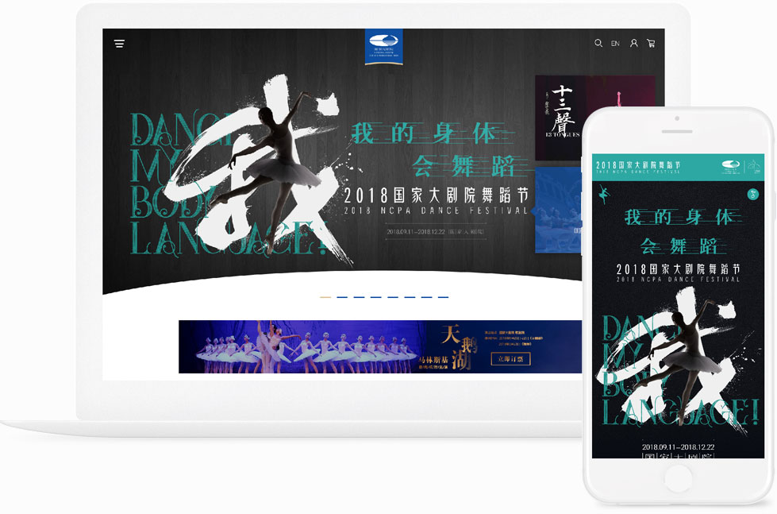
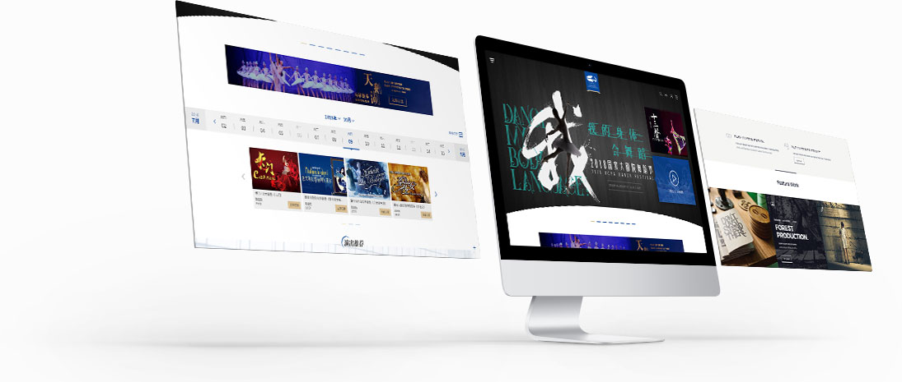

国家大剧院始终秉承“人民性、艺术性、国际性”宗旨，坚持艺术为民、坚定文化自信，以独具特色的运作模式和发展理念，描绘着中国在世界艺术版图上的时代画卷。国家大剧院官方网站作为国家大剧院对外宣传的重要途径，2018年国家大剧院委托中玺九合针对官方网站进行视觉、网站功能的升级优化工作，要求新网站在增加网站功能、提升用户体验的同时，视觉上要表现大剧院“人民性、艺术性、国际性”的宗旨。
为满足需求，在视觉表达方面提炼国家大剧院建筑主体元素，形成异形banner、标题icon以及背景元素，形成大剧院特有的视觉语言。功能方面保留购票推荐系统并变化购票系统逻辑，由剧目堆砌变为时间排序筛选样式，便于用户查询购买。重新整合网站内容，在首页设立功能板块“演出推荐”、“殿堂开放”、“普及活动”、“资讯动态”等，使得网站跟便于国家大剧院宣传和用户浏览使用。目前新版网站在搭建过程中，敬请期待！
